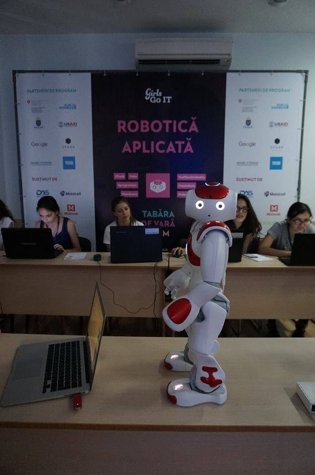

Roboțica Eva
- Nume: Eva
- Membru GirlsGoIT din: iulie 2017
- Domenii preferate: IT, inteligență artificială, robotică
- Limbaje de programare: C++, Java, Python
Roboțica Eva este un membru GirlsGoIT din iulie 2017.
Este pasionată de IT, inteligență artificială și robotică.
A participat la tabăra de vară GirlsGoIT STEM 2017, la secțiunea robotică și acum este un membru activ în comunitatea internațională GirlsGoIT